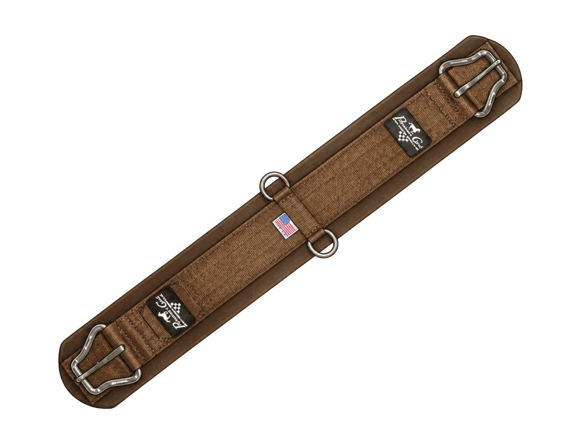

Security
Cinches
The cinch fastens around the horse's barrel and holds the saddle in place. On the near (left) side, the latigo — a long leather or nylon strap — threads through the cinch ring and ties or buckles to tighten the saddle. On the off (right) side, the off billet is a shorter, fixed strap that attaches directly to the cinch ring with a buckle. Together, the latigo and off billet hold the cinch evenly under the horse. The cinch should lie flat and be snug enough for security without pinching skin or pulling the saddle out of balance.